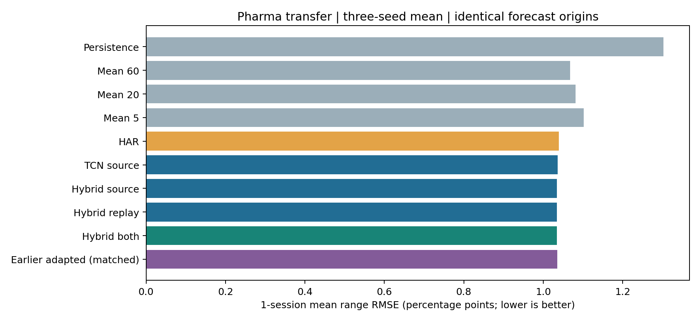
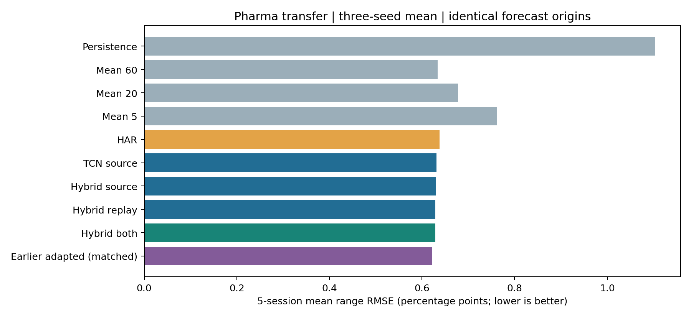
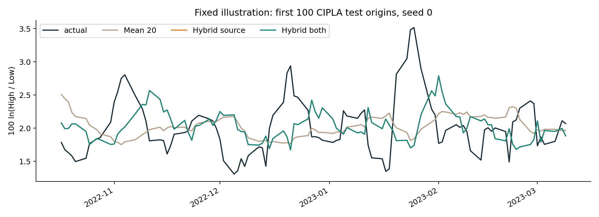

DeepGen: recovered project and novelty experiments
Restored to D:\IE643_project from GitHub commit 3b929229be7739819d76702616f4d8410753af68. The recovery includes only files pushed to GitHub. Some later local study-guide edits were absent; this document explains the recovered and new work.
1. What changed?
The intensive project remains available: weather and energy at 24 hours and rolling next hour; finance at five sessions with four forecast variables. The novelty page adds two specialized finance tasks. H1 predicts tomorrow's range. H5 mean predicts the average of the next five daily ranges. Both keep multivariate inputs and transfer from IT to pharma.
Range = 100 ln(High / Low). For example, High = 102 and Low = 100 gives approximately 1.98. This describes trading variability, not whether the stock will rise. A five-day average reduces individual-day noise, but its lower absolute error cannot by itself prove a better model.
2. Training from scratch
Each company's first 70% is training, next 10% validation and final 20% test. Training and validation select source models using IT answers. At every origin, only the previous 60 sessions form the input. Targets never cross split boundaries. A 60-session range mean scales returns, gaps and range; volume is normalized within the observed window.
The causal TCN has 2,449 weights (the earlier full finance hybrid has 26,888 neural weights; the specialist forecasts a narrower target), a 4-to-16 input projection, three residual convolution layers with dilations 1, 2 and 4, and a linear prediction head. The convolutions see 15 recent positions; the normalization statistics summarize all 60. The head predicts a correction to the last five-session average, and outputs are constrained positive. Source training minimizes MSE in original range units.
The linear branch uses averages over 1, 5, 20 and 60 sessions, standard deviations, absolute returns and gaps. It has 14 coefficients fitted by ridge regression. Its multi-scale motivation resembles HAR, but the input is daily range rather than the original realized-volatility target. A weight chosen from 0, .25, .5, .75 and 1 combines its prediction with the TCN using source validation only.
3. What does adaptation use?
Source replay MSE + 0.1 MMD + 0.1 CORAL + 0.01 source-weight penalty. Source replay keeps the model useful on IT. MMD matches feature distributions; CORAL matches feature covariances. The penalty discourages moving too far from the saved source weights. No pharma forecast answers or historical tail regression pairs enter this new procedure.
Only pharma training input windows are used for alignment. Source validation selects the checkpoint, with the original checkpoint included as a fallback. We also train replay-only, MMD-only and CORAL-only variants. The same source-selected mixture weight is used across all these comparisons.
4. Measured results
Next-session range
| RMSE | MAE | MSE | |
|---|---|---|---|
| method | |||
| HAR | 1.03887 | 0.70747 | 1.07926 |
| Hybrid both | 1.03447 | 0.70504 | 1.07014 |
| Hybrid coral | 1.03447 | 0.70504 | 1.07014 |
| Hybrid mmd | 1.03447 | 0.70504 | 1.07014 |
| Hybrid replay | 1.03447 | 0.70504 | 1.07014 |
| Hybrid source | 1.03447 | 0.70504 | 1.07014 |
| Mean 20 | 1.08148 | 0.74803 | 1.16960 |
| Mean 5 | 1.10159 | 0.76014 | 1.21351 |
| Mean 60 | 1.06748 | 0.74089 | 1.13950 |
| Persistence | 1.30309 | 0.90205 | 1.69805 |
| TCN both | 1.03652 | 0.70825 | 1.07438 |
| TCN coral | 1.03652 | 0.70825 | 1.07438 |
| TCN mmd | 1.03652 | 0.70825 | 1.07438 |
| TCN replay | 1.03652 | 0.70825 | 1.07438 |
| TCN source | 1.03652 | 0.70825 | 1.07438 |

Average range over the next five sessions
| RMSE | MAE | MSE | |
|---|---|---|---|
| method | |||
| HAR | 0.63760 | 0.46887 | 0.40653 |
| Hybrid both | 0.62899 | 0.46141 | 0.39563 |
| Hybrid coral | 0.62898 | 0.46141 | 0.39562 |
| Hybrid mmd | 0.62898 | 0.46140 | 0.39562 |
| Hybrid replay | 0.62897 | 0.46140 | 0.39561 |
| Hybrid source | 0.62951 | 0.46164 | 0.39629 |
| Mean 20 | 0.67785 | 0.50387 | 0.45947 |
| Mean 5 | 0.76224 | 0.55699 | 0.58101 |
| Mean 60 | 0.63393 | 0.46686 | 0.40187 |
| Persistence | 1.10350 | 0.77652 | 1.21770 |
| TCN both | 0.63000 | 0.46178 | 0.39690 |
| TCN coral | 0.62999 | 0.46177 | 0.39689 |
| TCN mmd | 0.62998 | 0.46177 | 0.39689 |
| TCN replay | 0.62998 | 0.46176 | 0.39688 |
| TCN source | 0.63091 | 0.46212 | 0.39806 |


Combined alignment changed H5 hybrid RMSE by 0.08% relative to source-only. Replay-only is slightly better than combined alignment (H5 RMSE 0.628974 vs 0.628986); there is no demonstrated alignment-specific gain. Never describe baseline improvement or a shorter/easier task as an adaptation improvement. H1 was evaluated before the H5-mean extension was designed. The old test period was already inspected during project development.
Matched old-hybrid H5 mean: RMSE 0.6212, MAE 0.4844. It retains better RMSE; the specialist improves MAE. Temporal-block analysis does not establish a reliable H5 gain over the 60-session mean. See results/novelty_finance_mean5/block_uncertainty.csv.
5. What did the intensive models contain?
The earlier H24/finance hybrid combines ridge, Patch MLP and DLinear branches, source/adapted variants and simple mean forecasts. The weather/energy hourly system combines a small causal LiteTCN, local dynamics and earlier-model first-step forecasts with persistence. Historical target values supplied auxiliary forecasting/calibration answers there. That differs from the new finance alignment experiment, which uses target feature distributions without target prediction labels.
Retained LiteTCN and boosted LiteTCN were additional experiments; the earlier H24 hybrid remained stronger on key RMSE. See the recovered complete intensive guide for the original evidence. The new range specialist does not replace all those models.
6. Launch and reproduce
cd /d D:\IE643_project python -m streamlit run app/app.py --server.address 127.0.0.1 --server.port 8502
Or double-click START_DASHBOARD.bat. Open http://127.0.0.1:8502 and enable Novelty: next-session finance in the sidebar. Select next-session or five-session-average range. Upload one company CSV, or use a built-in example. The app never retrains from the upload. A live forecast has no actual value; historical evaluation displays actuals and metrics.
python -m src.novelty_finance --horizon 1 python -m src.novelty_finance --horizon 5 python -m src.novelty_finance_legacy python -m src.build_novelty_documents
7. Submission requirements
Poster: A1 print plus PDF. Report: at most two pages. Deadline: 22 November 2026, 11:59 PM IST. Attend the allocated in-person slot on 23 or 25 November. The poster needs member emails, IITB/course logos, project sections, novelty experiments, results, acknowledgements and GitHub/demo links.
Edit report/novelty/poster_details.json with the actual emails and demo URL, then rebuild. Until these are supplied the poster is explicitly marked DRAFT. Check links and your assigned presentation slot before submission.
8. Speech-ready explanation
Our earlier finance model found daily movements difficult. We therefore studied a narrower target: the daily trading range, and then its average over five sessions. We combined a small causal TCN with a multi-scale linear predictor. We also tested MMD and CORAL using target inputs only, with replay-only controls. We report the simpler-task gains separately from adaptation gains, including cases where source validation keeps the original model.
9. Likely questions
Is changing the task itself a novel algorithm? No. It is an experimentally evaluated task reformulation. The model combination, scale handling and controlled adaptation study are project design choices built from established methods.
Is a five-session average a five-step trajectory? No. It is one value summarizing five future daily ranges. The original five-step multivariate model is still available separately.
Does alignment necessarily help? No. It can remove meaningful domain differences, and source-validation selection can reject useful or harmful target changes. This study does not prove unseen target improvement.
Why so much residual error? News-driven spikes are not contained in the past price/volume inputs. Averaging reduces some noise but does not make the future deterministic.
What is missing before print? Confirm actual email addresses and the demo-video link in the poster settings. The current PDF is a review draft if those fields are blank.